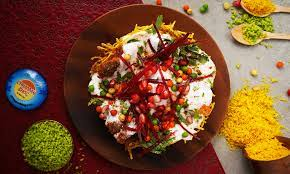
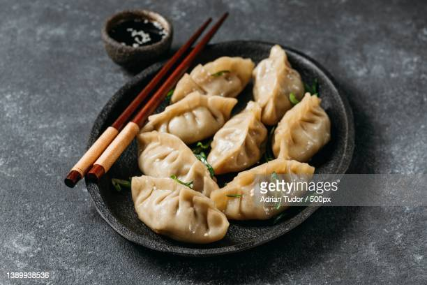
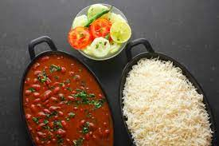
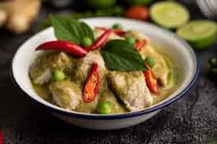

 Alu chat (also spelled as alu chaat, aloo chat, or aloo chaat) is a street food originating from the
Indian subcontinent, it is popular in North India, West Bengal in Eastern India, Pakistan, parts of Sylhet
Division of Bangladesh and Trinidad and Tobago.
Allu Chaat
price-50Rs

Momo was initially a Newari food in the Katmandu valley. It was later introduced to Tibet, China and
as far away as Korea & Japan by a Nepalese princess who was married to a Tibetan king in the late fifteenth
century. In Newari, one of Nepal's oldest languages, 'mome' means cooking by steaming.
Momo
price-100Rs

Rajma is a popular dish in the Northern states of India, as well as in Pakistan and Nepal. Some of the
best Rajma is said to be grown in the north Indian states of Himachal Pradesh, Uttarakhand and the Jammu region
of Jammu and Kashmir.
Rajma-Rice
price-120Rs
It is said to have been invented in 1975 by Nelson Wang, a cook at the Cricket Club of India in Mumbai, when a
customer asked him to create a new dish, different from what was available on the menu.
Veg-Manchurien
price-220Rs

The origins of Thai red curry
The dish originates in Central Thailand. As the only South-East Asian country to not be colonised during the
Western imperialism in Asia, the Thai cuisine was able to remain largely unaltered by the European regime and
taste buds.
Thai-curry
price-320Rs
Ice cream is a frozen dessert typically made from milk or cream that has been flavoured with a sweetener, either
sugar or an alternative, and a spice, such as cocoa or vanilla, or with fruit, such as strawberries or peaches.
Food colouring is sometimes added in addition to stabilizers.